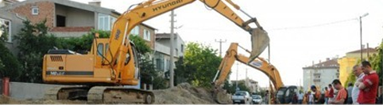
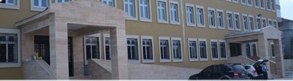
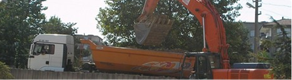

Altyapı Çalışmaları
Sağlam, Güvenilir, İstikrarlı İş Politikamız Doğrultusunda Altyapı Çalışmamız ile Hizmetinizdeyiz. devamını oku...

Üstyapı Çalışmaları
Mimari çözüm üretmede ve ince işlerin uygulanmasında bugüne kadar izlediği çizginin temelindeki mükemmel kalite anlayışından hareketle, Köseoğl devamını oku...

Hafriyat
Tecrübeli ve deneyimli elemanlarımızdan oluşan kadromuz ile beraber geniş makine ve kamyon parkurumuzla her türlü hafriyat işleri, alt yapı işl devamını oku...

Peyzaj Düzenlemeleri
Amacımız yaptığımız çalışmaların doğal çevde ile uyum içerisinde olması ve estetiğinde beraber işlendiği, insanların yaşamaktan zevk duydukları devamını oku...